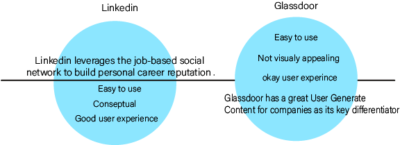
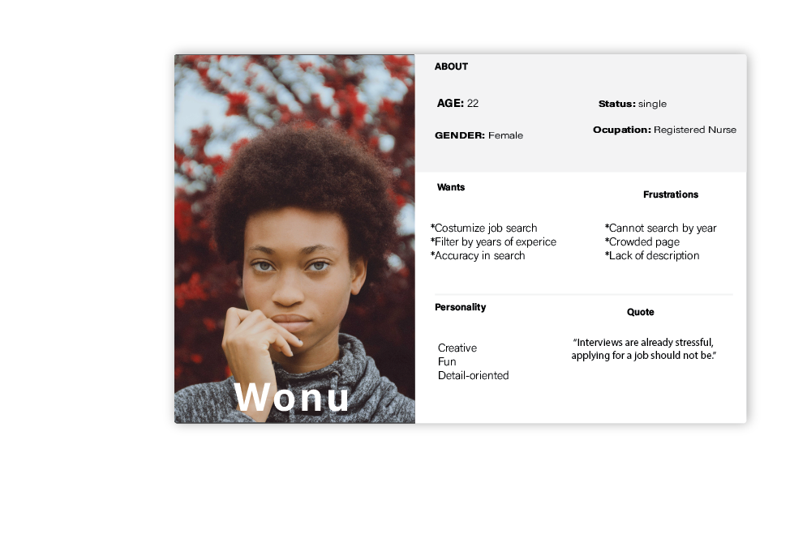
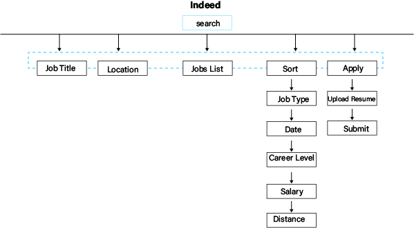
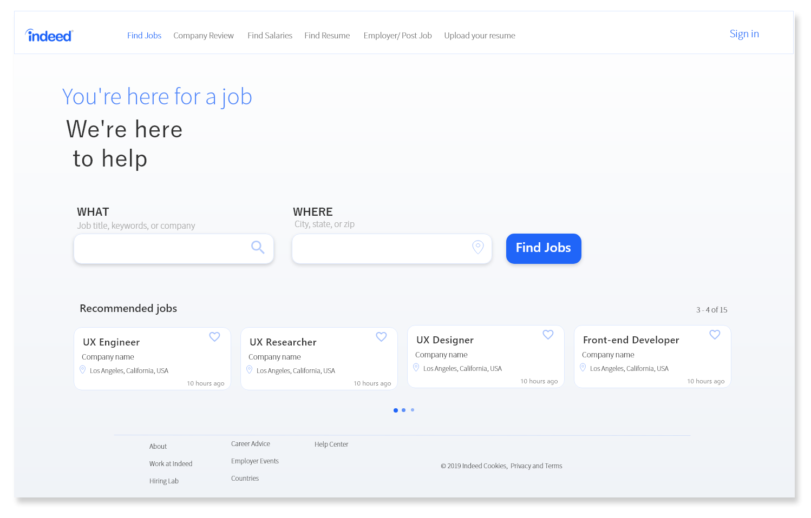
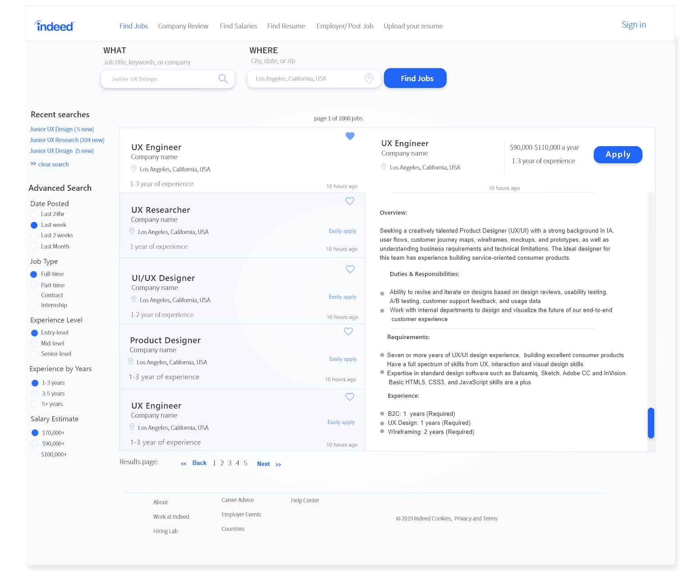

I am in no way affiliated with Indeed, this is a speculative project.
Client: Indeed
Team: Solo
Role: UI/UX Designer
Tools: Adobe : XD, Photoshop
Deliverables: Website prototype
Overview
Indeed is a search engine for job,it is an example of the vertical search; Indeed allows job seekers to apply directly to jobs on Indeed’s site and offering resume posting and storage.To improve aesthetics Indeed wants wants re-design the "find job" pages on their website .
Challenge
- Improve overall aesthetics
- Smoothly integrate the new features into the current app for an effortless user experience
- Improve physical consistency
Process

Research
Competitive Analysis
I listed Glassdoor, and Linkedin, as Indeed’s main competitors and analyzed the service and design on their applications.

Contextual Inquiry Interviews
I found that you can gather the best research by consulting with frequent users. I conducted a contextual interview with a few participants about their experience with Indeed.
The interview consisted of open-ended questions about their experince navigating through Indeed. From this interview I was able to gather information about how to improve
user experience.
# of participants: 5 | Age: 19-30 | Gender: 3 males-2 females
Define
Persona
The participant " Wonu" is a young preffesonal, she participant in the interview for this design.
Therefore, I create a persona with her wants and frustration to better undertand what the target user is looking for in a new design.

Ideate
Information Architecture: Sitemap
Now,I created a sitemap based on existing design patterns of the existing Indeed site.
I desided to focus on "search" visualizing the information architecture and identifying key relationships between screens, I can better understand the flows and interactions throughout the site.

Wireframing helped me focus on the basic layout and visual hierarchy of the UI design before adding the styling.
I was also able to present these wireframes and gain valuable feedback with some of the interview participants.
Below are the wireframes of some of the main two screens.
Prototype
In this case I would have a prototype, but only two screens were designed so I created some of the key interactions using Adobe XD I used those short interaction to conduct usability testing testing. Below are the designs of some of the main two screens.


Usability Test
- To determine if the added feature was found useful
- To determine if the new design was met the users visual expectation
- Search for jobs as you normaly would on Indeeds landing page/li>
- use the filter to constumize you options
Objective:
User Task:
Results:
I was able to collect valuable feedback about the design
that I will later use to refine it.
Iterate
UI ElementsI created some guidelines in respect to the brand. I kept some of Indeed's colors and incorporate some to create a more uniformed "mood"
Reflection
usability testing can be a big help in discovering areas that are inconsistent with user expectations. Although I only design two screens, I learned alot about what is means to minimize the amount of times a user spends searching for something. Overall had a lot of fun doing this project
Next Steps
- I plan to re-do this project and design all pages of this website
- I also plan to create a hi-fi prototype of my design for better usability testing